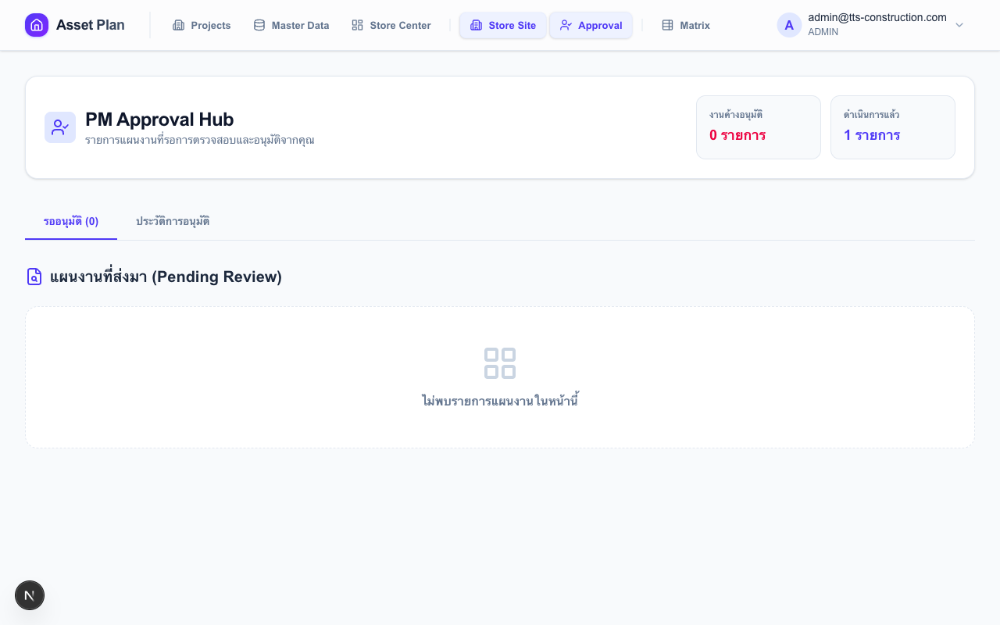
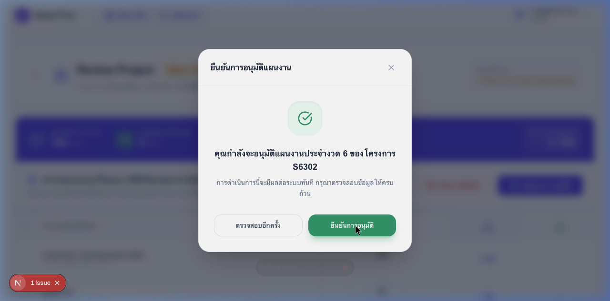
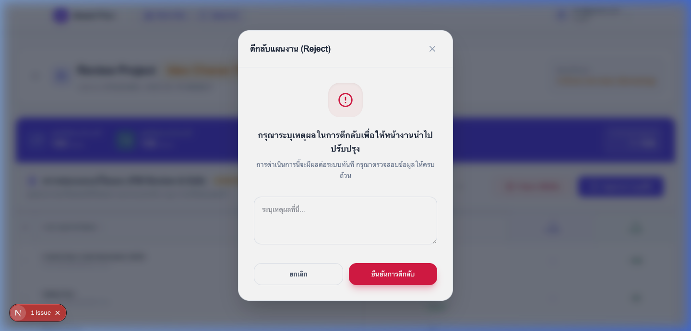

การตรวจสอบ แก้ไข และอนุมัติแผนความต้องการพัสดุจากหน้างาน
ไปที่เมนู PM Approval จะเห็น 2 แท็บ:
| แท็บ | เนื้อหา |
|---|---|
| "รออนุมัติ" | ใบงานที่ไซต์ส่งมาและรอการตัดสินใจ (สถานะ SUBMITTED) |
| "ประวัติ" | ใบงานที่ดำเนินการแล้ว (APPROVED / REJECTED / CLOSED) — ดูได้แต่แก้ไขไม่ได้ |
คลิกใบงานที่ต้องการ → เข้าหน้าตรวจสอบรายละเอียด
ด้านบนของหน้าตรวจสอบแสดงตัวเลขสรุปทั้งรอบ:

กรอง Mode เพื่อดูเฉพาะรายการที่เกี่ยวข้อง:
| Mode | แสดงรายการ | ใช้เมื่อ |
|---|---|---|
| ALL | ทุกรายการ | ดูภาพรวมทั้งหมด |
| DEMAND | รายการที่ขอเพิ่มกว่าที่ไซต์มีอยู่ | ตรวจสอบความต้องการใหม่ |
| RETURN | รายการที่จะส่งคืนเพราะมีเกิน | ตรวจสอบของที่จะคืน |
| CHANGED | รายการที่คุณแก้ไขตัวเลขแล้ว | ทบทวนการแก้ไขก่อนอนุมัติ |
Sort ตารางได้โดยคลิก header: ชื่อรายการ, แต่ละคอลัมน์เดือน
PM สามารถแก้ไขจำนวนในตารางได้โดยตรง เฉพาะเมื่อ Job เป็น SUBMITTED
| ปุ่ม | สถานะที่เปลี่ยน | ผลที่เกิดขึ้น |
|---|---|---|
| "อนุมัติ" | SUBMITTED → APPROVED | บันทึกการแก้ไขอัตโนมัติ → ส่งข้อมูลให้ Store Center ทันที |
| "ตีกลับ" | SUBMITTED → OPEN | ต้องกรอกเหตุผล → ส่งกลับให้ไซต์แก้ไขใหม่ |

